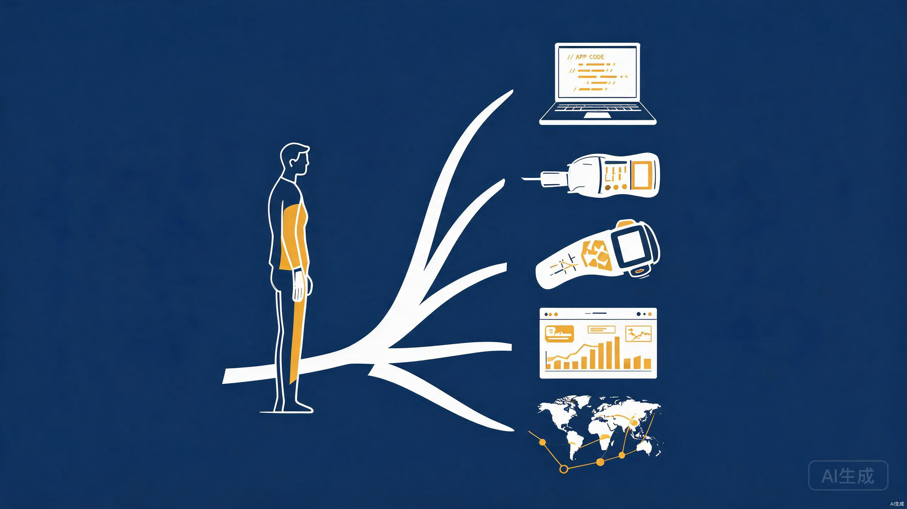

一、自我盘点 — 你手里有哪些牌
在道通科技的工作经历是你最大的差异化优势。道通科技是全球汽车智能诊断领域的头部企业，2025年营收达48.38亿元，净利润同比增长45.89%[1]。你在这家公司积累的行业认知、产品思维和技术深度，是绝大多数独立开发者不具备的。
行业知识
深入了解汽车诊断、TPMS、ADAS校准、远程诊断等业务场景。知道维修技师的真实痛点和工作流程，这是做产品的核心输入。
汽车诊断 OBD协议 维修场景产品视野
在上市公司参与过完整的产品研发流程，理解从需求分析、设计、开发到上线的全链路。知道B端用户需要什么，也知道怎么做出能卖出去的产品。
B端产品 用户研究二、方向选择 — 五条可行路径
基于你的行业经验和技术背景，以下是五条适合一人公司的创业方向，按推荐优先级排列：
路径 1：汽车维修店 SaaS 工具（最推荐） — 为中小型独立维修店提供轻量级数字化管理工具。不是做大而全的门店管理系统（那是全优车等公司的赛道[4]），而是做某个细分场景的极致单品。
具体方向举例：
- 维修工单 + 客户沟通助手：维修技师拍照记录故障 → AI自动生成工单摘要 → 一键发送给客户（微信/短信），包含问题说明、维修方案、报价预估。解决技师"没时间写单子、客户等半天不知道车什么情况"的痛点。
- 维修知识库 / 故障码查询工具：基于OBD故障码，提供结构化的维修建议、相关案例、配件价格参考。可以做成订阅制（按月/按店收费）。你的道通经验让你知道哪些数据最有价值。
- 门店客户管理系统（轻量CRM）：记录客户车辆信息、维修历史、保养提醒，自动发送保养到期提醒。帮助小店留住老客户。
为什么推荐：你既懂前端开发（能快速做出MVP），又懂汽车维修业务（知道真正的痛点在哪），还知道道通等大厂不会做这种"小工具"（他们的重心在硬件设备和大型诊断系统）。这是一个信息差 + 能力差的双重壁垒。
路径 2：汽车诊断数据可视化工具
面向车主或小型维修店，做一个汽车健康数据看板。用户通过OBD蓝牙适配器读取车辆数据，你的Web应用将其可视化呈现：油耗趋势、电池健康度、排放状态、潜在故障预警等。
盈利模式：硬件适配器销售（可以找代工厂贴牌）+ 软件订阅。全球OBD适配器市场与诊断工具市场高度相关[3]，但面向C端车主的数据可视化产品仍然稀缺。
路径 3：汽车行业垂直内容 / 知识付费
利用你在道通积累的行业知识，做汽车维修技术培训内容。形式可以是：
- 付费课程/专栏：面向初级维修技师的诊断技术进阶课程
- 行业咨询：帮助汽车后市场创业公司做产品规划和技术咨询
- 自媒体 + 导流：在小红书/抖音做汽车维修科普内容，引流到付费产品
优势是启动成本极低，劣势是天花板有限，更适合作为副业收入而非主业务。
路径 4：汽车后市场跨境工具
道通的海外业务占比很高。你可以利用对海外市场的了解，做面向海外维修店的中文配件查询/采购工具，或者帮助国内汽配商做海外市场的 Landing Page + 独立站代建服务。这是一个交叉领域，竞争者少。
路径 5：通用前端工具 / 模板
如果暂时不想绑定汽车行业，也可以发挥前端专长做通用产品：Notion模板、Figma插件、Next.js模板等。这类产品全球市场大，但竞争也激烈。建议作为现金流补充，不作为主攻方向。
三、方向可行性对比
| 维度 | 维修店SaaS | 诊断数据看板 | 知识付费 | 跨境工具 | 通用前端工具 |
|---|---|---|---|---|---|
| 行业壁垒 | 极高 | 高 | 高 | 中高 | 低 |
| 开发难度 | 中 | 中高 | 低 | 中 | 低 |
| 变现速度 | 中等（2-4个月验证） | 较慢（需硬件配合） | 快（1-2个月） | 中等 | 快（但收入低） |
| 收入天花板 | 高（SaaS经常性收入） | 中高 | 中 | 中 | 低 |
| 一人可行性 | 可行 | 较难（硬件环节） | 完全可行 | 可行 | 完全可行 |
| 综合推荐 | 首选 | 备选 | 副业搭配 | 探索期 | 现金流补充 |
四、落地路线图 — 6个月行动计划
深入一线，确认痛点
去3-5家中小型维修店实地观察，和技师聊天。在 Reddit（r/MechanicAdvice）、V2EX、小红书搜索"维修店管理""汽车诊断"相关讨论，收集真实痛点。不要凭道通的经验假设——大厂视角和小店需求可能完全不同。
用 Landing Page 测试需求
选一个最痛的点，做一个简洁的 Landing Page 描述解决方案。投放少量广告或发到维修行业群，看是否有老板愿意留资或咨询。如果有10+个真实咨询，说明需求成立，再开始写代码。
快速做出最小可用产品
只做核心功能，砍掉一切"可以以后再加"的东西。用你熟悉的技术栈（React/Next.js），2-3周完成MVP。找3-5个愿意内测的维修店，免费试用，每周收集反馈快速迭代。
从免费到收费，验证付费意愿
内测结束后，正式推出付费方案。建议定价策略：基础版 99元/月/店，专业版 299元/月/店。目标：3个月内获得10个付费用户。这个数字足以证明商业模式可行。2026年汽车后市场SaaS的选型逻辑已经从"功能多"转向"场景闭环能不能跑通"[6]。
找到你的增长飞轮
分析付费用户的获取渠道，聚焦最有效的1-2个渠道深耕。可能是维修行业微信群、抖音短视频、或者线下地推。同时启动知识付费副线（行业文章/短视频），为SaaS产品引流。
从1到10，建立可复制体系
当月收入稳定在3000-5000元以上时，考虑：是否需要注册公司、如何优化onboarding流程降低客服成本、是否引入AI能力提升产品价值。目标：6个月末达到月收入1万元的拐点。
五、财务规划 — 省钱就是赚钱
启动成本（控制在 3000 元以内）
- 域名 + 服务器：~500元/年
- Landing Page 投放测试：~1000元
- 设计资源（图标/模板）：~500元
- 杂项（工具订阅等）：~500元
月度运营成本（目标 < 500 元/月）
- 服务器/托管：~100-200元
- AI API 调用费：~100-200元
- 域名续费均摊：~40元
- 营销测试预算：~100元
核心原则：失业期间的最大优势是时间，最大劣势是现金流。因此，先用 Landing Page 验证需求，再写代码。不要花一个月开发一个没人要的产品。每一步都要用最小成本验证假设，2026年的独立开发者市场已经不允许"先做再找用户"的模式[7]。
六、风险与应对
| 风险 | 概率 | 应对策略 |
|---|---|---|
| 需求判断错误 | 中 | Landing Page 验证 + 实地走访，2周内发现方向不对立即调整 |
| 现金流断裂 | 中高 | 同步做知识付费/自由职业接单，保持月入3000+底线收入 |
| 大厂入局 | 低 | 做细分场景，大厂看不上；保持快速迭代，建立用户粘性 |
| 技术实现困难 | 低 | 你是前端工程师，核心挑战在产品和获客，不在技术 |
| 获客困难 | 高 | 深耕1-2个垂直渠道（维修行业群/短视频），不盲目铺开 |
七、心态建设 — 一人公司不是逃避，是升级
接受不确定性
打工有固定月薪，一人公司的收入可能这个月2000、下个月8000。这是正常的。你需要在心理上和财务上（预留3-6个月生活费）做好准备。
产品思维 > 技术思维
从"我能做什么"转向"用户需要什么"。你最大的价值不是代码能力，而是你比其他程序员更懂汽车维修行业。把这个优势发挥到极致。
快速失败，快速调整
一个方向试2周没反馈就换，不要沉没成本。一人公司最大的优势就是船小好调头。保持每周复盘的习惯。
保持健康节奏
一人公司容易陷入"全年无休"的状态。设定明确的工作时间（比如10:00-19:00），每周至少休息一天。长期可持续的节奏比短期冲刺重要得多。
八、本周就可以开始的事
Day 1-2：痛点调研清单
- 列出你在道通工作期间观察到的 10 个维修技师痛点
- 在 Reddit/V2EX/小红书 搜索"汽修店老板""维修管理"相关帖子，记录高频需求
- 联系 2-3 个认识的维修店老板，约一杯咖啡聊聊他们的管理困难
Day 3-5：确定第一个产品方向
- 从调研结果中选出 1 个最痛、最具体的场景
- 用一句话描述："我帮助 [谁] 解决 [什么问题]，通过 [什么方式]"
- 如果这句话说不清楚，说明方向还不够聚焦，继续缩小范围
Day 6-7：Landing Page 上线
- 用你擅长的前端技术，4小时内做出一个简洁的 Landing Page
- 页面核心：问题描述 + 解决方案 + 留资表单（邮箱/微信）
- 发到维修行业相关社群，观察点击和留资数据
记住：道通科技的行业经验是你独一无二的武器。不要去做"又一个通用SaaS"——那个赛道挤满了没有行业背景的程序员。你要做的是把汽车诊断行业的深层认知，变成一个解决真实问题的小而美产品。这是只有你能做的事。